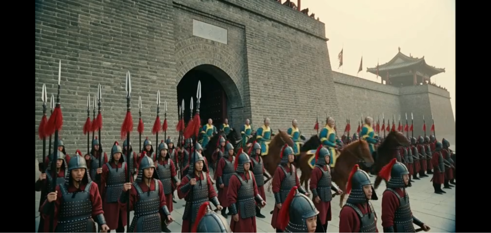

生產環境
Minimax H3 影像生成
ComfyUI workflow・角色一致性調校・成本優化
目前在用 ComfyUI 跑 Minimax H3 做 VFX，已經有幾顆鏡頭進到實際案子。被交辦的工作大多是換臉／換動作，最大的卡點是角色一致性——當待替換角色跟參考圖特徵太接近時，模型分不清楚「這是誰」。
解法是把「輸出」反過來當「輸入」用：故意把角色造型誇張化生成一版，拿這版特徵被拉開的結果當新參考圖重新餵回去；或是從堪用影片截圖，丟圖像 AI 做細部修正，再把處理過的圖當首幀餵回影片生成流程。
純t2v，三方陣營辨識，明軍／清軍／百姓，若prompt下的太模糊，會導致所有人都綁上辮子，在prompt前面加入角色定位區隔，同畫面三種身份不會混淆，在minimax h3有不錯的效果

指定角色，姑姑嘎嘎、菲比、CJ，利用ref2v
租 GPU
目前工作時使用公司的GPU生成，但自己在家沒那麼好的GPU，生成影片的SaaS收費又挺驚人，選擇租GPU
用 RunPod 租 5090，得透過cli工具抓想要的模型，不太直覺，且要計算好容器需要的容量，但比 SaaS 便宜很多，等於用自己的時間換成本。
SaaS 單次成本
NT$20–30 / 次
自租 5090
US$0.6~1 / hr
單顆鏡頭生成
約 10–20 min
影片存於雲端硬碟資料夾，ComfyUI 生成的assets通常本身就是 workflow，可以拖進去
開啟雲端硬碟資料夾